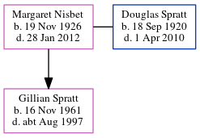

Gillian Patricia Spratt 1961 - c1997
[ Home ] | [ Calendar ] | [ Surnames Index ] | [ Errors ] | [ Family History ]The child of Douglas Spratt and Margaret Nisbet, Gillian Spratt, the third cousin on the father's side of Nigel Horne, was born in Edinburgh, Midlothian, Scotland on 16 Nov 19611.
She died c. Aug 1997 in Lambeth, London, England1.
Parents
- Douglas Norman was born on 18 Sept 1920
- Margaret Knox Gowans was born on 19 Nov 1926
Citations
- England & Wales deaths 1837-2007 - Findmypast
Media
England & Wales deaths 1837-2007 - BMD/D/1997/8/82223090
Family Tree
Map
Generated by ged2site. Last updated on Jul 3, 2024